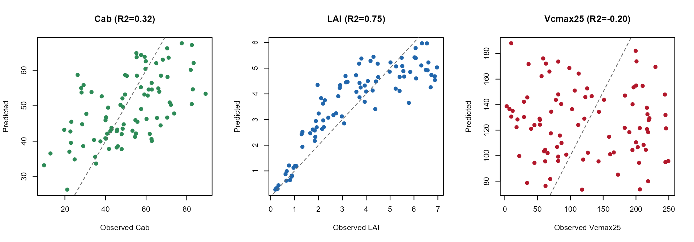

08. Hybrid Inversion from SCOPE Reflectance
t08-hybrid-inversion.Rmd
library(ToolsRTM)
library(SCOPEinR)
library(randomForest)Tutorial 07 found that Vcmax25 (photosynthetic capacity)
has no direct radiative-transfer signature – Fluspect/4SAIL don’t take
it as an input at all, so any reflectance response is indirect, through
the leaf temperature the energy balance solves for. This page tests the
practical consequence: can Vcmax25 actually be
retrieved from sensor-band reflectance, the way Cab or
LAI can?
1. Simulate a LUT and convolve to Sentinel-2A
path_input <- system.file("input", package = "SCOPEinR")
scope_options <- read.table(file.path(path_input, "setoptions.csv"), header = TRUE, sep = ",")
inputLUT <- read.table(file.path(path_input, "inputs_SCOPE.csv"), header = TRUE, sep = ",")
n_samples <- 300
set.seed(11)
LUT <- getLUT.SCOPE(inputLUT = inputLUT, nLUT = n_samples)
db_sims <- SCOPEinR::get.SCOPE.parallel(
LUT = LUT, options.SCOPE = scope_options, optipar = SCOPEinR::optipar2021.Pro.CX,
leaf.model = "fluspect-CX", canopy.model = "fourSAIL", parallel = TRUE,
get.outputs = "ALL", get.plots = FALSE, get.csv = FALSE, n.cores = 3)
wl_optical <- 400:2400
n <- length(wl_optical)2. reflapp’s real gotcha: near-zero irradiance at
absorption bands
band_refl <- t(sapply(db_sims, function(r) {
rfl_i <- r$data.rad$reflapp[1:n]
# reflapp is a radiance ratio (Lo_/incident irradiance), and incident
# irradiance is genuinely near-zero at a handful of water-vapor/O2
# absorption wavelengths (~849-850, ~1355-1420, ~1800-1950nm) -- numerically
# unstable there in EVERY simulation, including SCOPEinR's own canonical
# example row, not just unusual random draws. Real sensors avoid placing
# bands on these features for the same reason; linearly interpolate over
# just those narrow gaps before convolving.
bad <- !is.finite(rfl_i)
if (any(bad)) rfl_i[bad] <- approx(wl_optical[!bad], rfl_i[!bad], xout = wl_optical[bad])$y
df_i <- data.frame(wave = wl_optical, rfl = rfl_i)
get.spectral.convolution.srf(df_i, ToolsRTM::srf.sentinel2a)$RFL
}))
colnames(band_refl) <- paste0("B", seq_len(ncol(band_refl)))3. Retrieve Cab, LAI, and
Vcmax25 – same method, same data
set.seed(1)
train_idx <- sample(seq_len(n_samples), size = round(0.7 * n_samples))
test_idx <- setdiff(seq_len(n_samples), train_idx)
r2_f <- function(obs, pred) 1 - sum((obs - pred)^2) / sum((obs - mean(obs))^2)
rmse_f <- function(obs, pred) sqrt(mean((obs - pred)^2))
invert_trait <- function(trait) {
ml_data <- data.frame(band_refl, y = LUT[[trait]])
rf <- randomForest(y ~ ., data = ml_data[train_idx, ], ntree = 300)
pred <- predict(rf, ml_data[-train_idx, ])
obs <- ml_data$y[-train_idx]
list(obs = obs, pred = pred, R2 = r2_f(obs, pred), RMSE = rmse_f(obs, pred))
}
inv_cab <- invert_trait("Cab")
inv_lai <- invert_trait("LAI")
inv_vcmax <- invert_trait("Vcmax25")
summary_df <- data.frame(
trait = c("Cab", "LAI", "Vcmax25"),
direct_RT_input = c("Yes (Fluspect)", "Yes (4SAIL)", "No (biochemistry only)"),
R2 = c(inv_cab$R2, inv_lai$R2, inv_vcmax$R2),
RMSE = c(inv_cab$RMSE, inv_lai$RMSE, inv_vcmax$RMSE)
)
knitr::kable(summary_df, digits = 3)| trait | direct_RT_input | R2 | RMSE |
|---|---|---|---|
| Cab | Yes (Fluspect) | 0.325 | 14.583 |
| LAI | Yes (4SAIL) | 0.750 | 1.013 |
| Vcmax25 | No (biochemistry only) | -0.202 | 81.124 |
op <- par(mfrow = c(1, 3))
plot(inv_cab$obs, inv_cab$pred, pch = 19, col = "#2E8B57",
xlab = "Observed Cab", ylab = "Predicted", main = sprintf("Cab (R2=%.2f)", inv_cab$R2))
abline(0, 1, col = "grey40", lty = 2)
plot(inv_lai$obs, inv_lai$pred, pch = 19, col = "#2166AC",
xlab = "Observed LAI", ylab = "Predicted", main = sprintf("LAI (R2=%.2f)", inv_lai$R2))
abline(0, 1, col = "grey40", lty = 2)
plot(inv_vcmax$obs, inv_vcmax$pred, pch = 19, col = "#B2182B",
xlab = "Observed Vcmax25", ylab = "Predicted", main = sprintf("Vcmax25 (R2=%.2f)", inv_vcmax$R2))
abline(0, 1, col = "grey40", lty = 2)
par(op)Vcmax25 comes back essentially unretrievable (R² at or
below zero – no better than predicting the mean every time), consistent
with Tutorial 07: its only path into reflectance is the small, indirect
leaf- temperature effect, not a direct optical signature a 13-band
sensor can separate from everything else varying at once. That’s the
expected result, not a failure of the method – SCOPE’s own coupling of
radiative transfer and biochemistry doesn’t imply every biochemical
trait becomes remotely retrievable just because it can be simulated.
LAI retrieves well – its NIR-plateau signature is strong
enough to come through even with every other trait varying at once.
Cab retrieves moderately – weaker than its strong, direct
role in Fluspect alone would suggest, because
getLUT.SCOPE() varies every free parameter simultaneously
(leaf biochemistry, LAI, leaf-angle distribution, geometry), adding real
confounding noise a smaller, more targeted LUT wouldn’t have.